Guía de configuración avanzada¶
Proveedores vectoriales soportados¶
Actualmente, QFieldCloud admite capas GeoPackage y PostGIS para la edición colaborativa. Otros formatos compatibles con QGIS también deberían funcionar, pero no son oficialmente compatibles.
Synchronization process¶
When working with QFieldCloud it is important that you understand the synchronization process so that you avoid data loss or the overwriting of files / deltas (changes). You can find the technical details on the different job types in the technical documentation section. In simple words, there exist three different synchronization activities:
- From QGIS to QFieldCloud: This synchronization process uploads a complete new "project package" and replaces the existing one stored in the cloud. If you are working with GeoPackages it is important to note, that the existing GeoPackage on the cloud will be replaced with the one you have just uploaded.
- From QFieldCloud to QField: If you want to download the uploaded "project package" to your mobile device, QFieldCloud "packages" the project into a specific format that is saved in the internal application folder structure. Important to know here is that in case you are working with PostgreSQL databases and have chosen the working mode offline editing then a local GeoPackage of the data will be created in the corresponding folder (make sure to configure your secret properly), unless a direct connection is needed.
- From QField to QFieldCLoud: Once you are done with collecting data, you can choose among two different synchronization options. The changes made are being applied as so-called deltas. Deltas reflect only the changes made to the different attributes. When pushing to or synchronizing with QFieldCloud, it is only the deltas that are being applied. Unlike in the synchronization process from QGIS to QFieldCloud, the whole GeoPackage is NOT replaced.

Consejo
There are a few tips, which we recommend to follow in order to avoid synchronization issues or overwritten data.
- Do not modify the QGIS project while personnel is working simultaneously in QField. If you synchronize your Desktop version to the cloud, QFieldCloud will overwrite the files. Although there may have been changes applied in QFieldCloud, QFieldSync will not show this by default. If you must work parallel on Desktop, make sure to check the QFieldCloud status and download the most recent data before uploading new files versions from your Desktop.
- Do not change the data structure before synchronizing the latest field edits. Often, officers work in QGIS and adapt the data structure of the project files, which leads to errors if the changes from QField have not yet been pushed to QFieldCloud.
- Use uuid's as primary keys, especially when working with relations and in teams. Synchronization often occur due to the lack of adding primary keys to your datasets. Especially, when working with relationships and in teams, if the data were not configured with an according primary key, it may happen that data loss occurs because of simultaneous editing of the data.
Modos de trabajo¶
Al configurar un proyecto para QField puedes elegir entre las diferentes opciones de "Empaquetado".
-
Edición sin conexión: Independientemente de si sus archivos están almacenados en un GeoPackage, una base de datos u otro formato, QFieldCloud creará un GeoPackage temporal de todos los datos del proyecto. Los cambios realizados en este GeoPackage no estarán disponibles para otros. Una vez que los cambios se sincronicen o se envíen a QFieldCloud, los cambios realizados solo se aplicarán al archivo existente en QFieldCloud. Recomendamos utilizar esta opción para evitar pérdidas de datos innecesarias en caso de pérdida de conexión de datos.
-
Acceso directo a los datos: Al utilizar el
acceso directo a la base de datos, QFieldCloud editará directamente los datos en la base de datos PostGIS. Esto solo funcionará con una conexión a Internet confiable en el campo, pero tiene la ventaja de que todos los datos son directamente visibles para todos los usuarios y permite utilizar cualquier configuración específica de PostGIS (desencadenantes, campos generados, etc.).
Los cambios solo serán visibles para los usuarios una vez aplicada la sincronización mediante QFieldCloud en los diferentes dispositivos. Al crear una copia local, las operaciones avanzadas de PostGIS (como los activadores) no estarán disponibles en QField.
You can find more information on QFieldCloud technical reference.
Trabajar con GeoPackages¶
Usar GeoPackages es normalmente la mejor elección para una configuración sencilla en la que centralizar los datos recopilados por sus usuarios de QField en un solo archivo.
Si desea configurar una relación, agregue un campo UUID y úselo como clave principal o externa.
Nota: No utilice el campo fid predeterminado para las relaciones (como clave principal o externa).
¿Por qué? El campo fid se puede sincronizar al trabajar con QFieldCloud, lo que generará errores con el tiempo.
Por otro lado, un UUID es único y no se sincronizará.
Flujo
Preparación del escritorio
- Cree un nuevo proyecto en QGIS.
- Cree capas de GeoPackage y guárdelas en la misma carpeta que su proyecto de QGIS.
- Configure el GeoPackage como "Edición sin conexión" en la configuración del plugin QFieldSync.

- Sube el proyecto a QFieldCloud.
Trabajo de campo
- Inicie sesión en QFieldCloud y descargue el proyecto a su dispositivo.
- Recopile y edite algunos datos, y suba los cambios.
Escritorio
- Con QFieldSync, descargue los archivos actualizados (el archivo de GeoPackage debería haber cambiado).
Advertencia
No recomendamos editar ni agregar datos nuevos directamente desde QGIS, ya que cada vez que QGIS sincroniza el proyecto con QFieldCloud, todo el GeoPackage reemplaza al existente en QFieldCloud. Sin embargo, al usar QFieldCloud, solo se actualizan los cambios dentro del archivo.
PostGIS¶
Usar PostGIS es una buena opción si sus datos deben ser visibles y editables para múltiples usuarios.
Requiere que su base de datos sea de acceso público y que las credenciales se guarden sin cifrar en el proyecto QGIS. Tenga en cuenta las implicaciones de seguridad de estos requisitos y recuerde realizar copias de seguridad. Hay dos maneras de guardar el acceso a la base de datos y hacerlo disponible para QFieldCloud.
- Conexión directa: Al conectarse a una base de datos PostGIS, puede almacenar toda la información, incluidas las credenciales, dentro del Proyecto QGIS directamente.
- Uso de un archivo de servicio PG: Uso de un archivo de servicio que se puede guardar como un "secreto" en QFieldCloud. Recomendamos encarecidamente hacer uso de esta opción debido a la seguridad de los datos. Lea más sobre PG Service y sus secretos aquí
Flujo
Preparación del escritorio
- Cree un nuevo proyecto.
- Añada una capa PostGIS, asegurándose de guardar las credenciales en el proyecto o de haber creado el archivo del servicio PG.
- Asegúrese de que la conexión a la base de datos PostGIS sea pública (IP pública o nombre de dominio; no funcionará con
127.0.0.1nilocalhost). - En la configuración del proyecto de QFieldSync, seleccione el modo de empaquetado que prefiera.
- Sube el proyecto a QFieldCloud.
Trabajo de campo
- Inicie sesión en QFieldCloud y descargue el proyecto.
- Recopile datos.
- Si estaba usando la
edición sin conexión, envíe o sincronice los cambios al regresar a la oficina.
Escritorio
- Todos los cambios deben ser visibles directamente en la base de datos PostGIS.
Nota
Al utilizar el acceso directo a la base de datos, QFieldCloud editará directamente los datos en la base de datos PostGIS.
Esto solo funcionará con una conexión a Internet fiable sobre el terreno, pero tiene la ventaja de que todos los datos son directamente visibles para todos los usuarios y permite utilizar cualquier configuración específica de PostGIS (desencadenantes, campos generados, etc.).
Nota
Al usar la edición sin conexión, QField trabajará con una copia local de la base de datos en un GeoPackage, que QFieldCloud sincronizará con la base de datos original una vez sincronizada por el usuario.
Recomendamos usar esta opción para evitar pérdidas innecesarias de datos en caso de pérdida de conexión.
Los cambios solo serán visibles para los usuarios una vez aplicada la sincronización mediante QFieldCloud en los diferentes dispositivos. Al crear una copia local, las operaciones avanzadas de PostGIS (como los activadores) no estarán disponibles en QField.
Puede encontrar más información en la referencia técnica de QFieldCloud.
Restricción de archivos de proyecto¶
Para evitar cualquier modificación del archivo principal del proyecto QGIS, los administradores del proyecto pueden restringir el acceso a estos archivos. Esto se puede hacer en la sección de configuración de QFieldCloud.
- Desde la página de inicio de QFieldCloud directamente a Configuración
- Habilitar el botón
Restringir archivos de proyecto

Una vez configurado, solo los administradores y gerentes podrán aplicar cambios a los archivos mencionados anteriormente. Otros colaboradores del proyecto podrán cargar y modificar otros archivos, como datos en GeoPackages, pero no podrán modificar el archivo principal ni sus componentes principales.
Archivos restringidos¶
Cuando esta opción está habilitada, los siguientes archivos solo pueden ser modificados o cargados por un usuario con un rol de "administrador" o "gerente" para el proyecto:
- El archivo de proyecto QGIS principal (por ejemplo,
my_project.qgz). - El archivo zip de archivos adjuntos asociado con el proyecto (por ejemplo,
my_project_attachments.zip). - Archivos de datos auxiliares de QGIS que almacenan información como posiciones de etiquetas (por ejemplo,
my_project.qgd). - Archivos de estilo QField (
.qml) que comparten el mismo nombre que el archivo del proyecto.
Handling Conflicts¶
When working in a collaborative environment with many users accessing the same project, it may happen that two users modify the same object during a mapping session. In your settings page, you can choose whether QFieldCloud should apply the last wins policy or whether conflicts should be marked and handled by a project manager.

See more on how QFieldCloud handles conflicts here
Envío automático a QFieldCloud¶
Con esta funcionalidad, puede forzar la inserción automática de cambios pendientes en los dispositivos QField sobre el terreno, así como especificar el intervalo entre las inserciones automáticas. Esta funcionalidad se activa mediante una configuración del proyecto, lo que permite la activación remota.
Preparación en escritorio
- Acceder a la configuración del proyecto: Ir directamente a Proyecto > Propiedades... > QField > QFieldCloud Packaging
- Activar envío automático: Active la opción "Enviar automáticamente los cambios pendientes en el siguiente intervalo" y establezca el intervalo que prefiera.
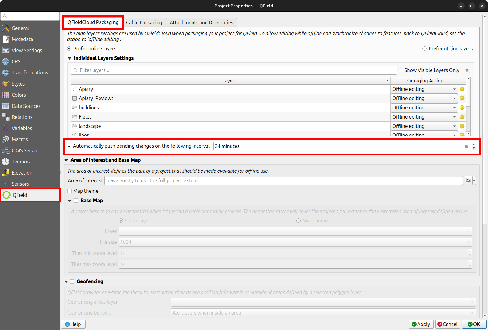
{kind=link}
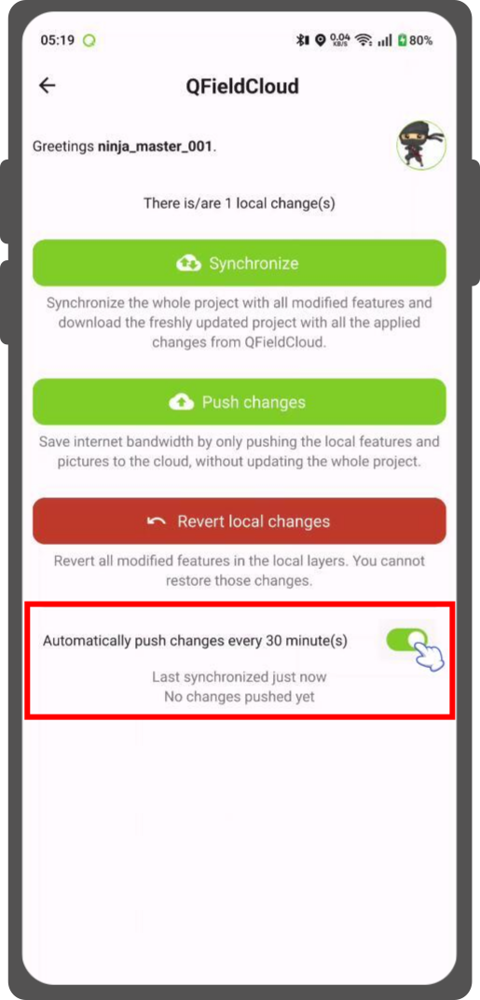
{kind=link}
Nota
Beneficios: - Actualizaciones en tiempo real: Garantiza la sincronización rápida de los datos de campo con el proyecto QFieldCloud. - Flujo de trabajo optimizado: Minimiza la intervención manual y garantiza que los topógrafos no tengan que preocuparse por la sincronización, lo que les permite centrarse en la calidad de los datos. Consideraciones: - Estabilidad de la red: Garantiza una conectividad a internet estable para la función de envío automático. - Optimización de la batería: Implementa estrategias para mitigar el consumo de batería en los dispositivos QField durante el trabajo de campo prolongado.
Creación de proyectos en una organización¶
Hay varias formas en las que puedes crear y cargar un proyecto en QField.
- Uso de QFieldSync
- Uso de QFieldCloud
- Cambio de propietario
Flujo
Option 1: Using QFieldSync¶
-
Follow the steps configure your cloud project, until you get to the "Project details".
-
Change the owner of the project to your Organization.
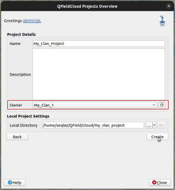
-
Click on "Create" to start the conversion and Synchronisation. When finished the project will appear in the list of projects of your Organization in QFieldCloud.
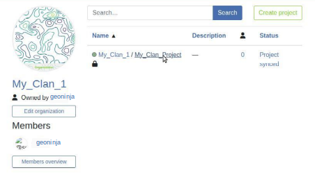
Option 2: Using QFieldCloud¶
-
In the QFieldCloud landing page direct to your organization.
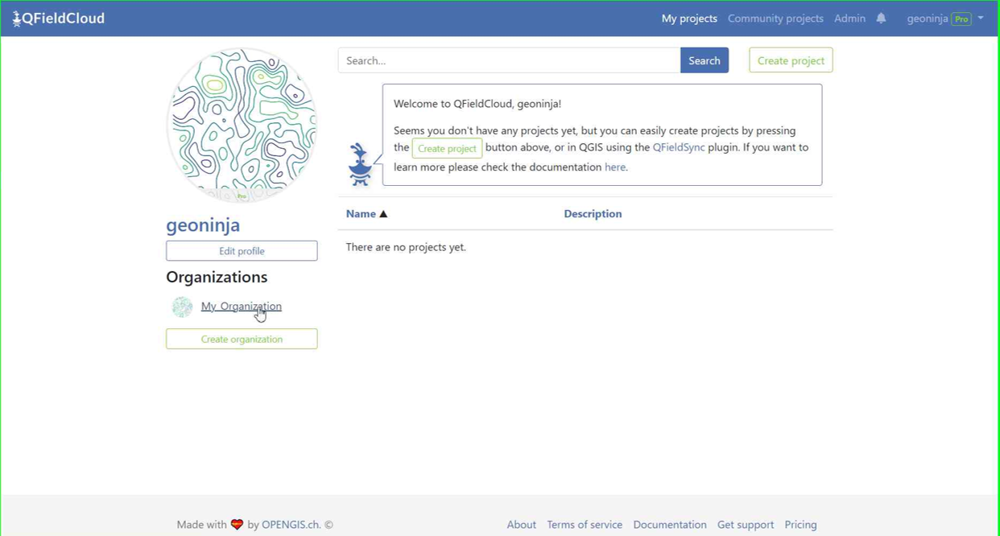
-
Click on "Create a project".
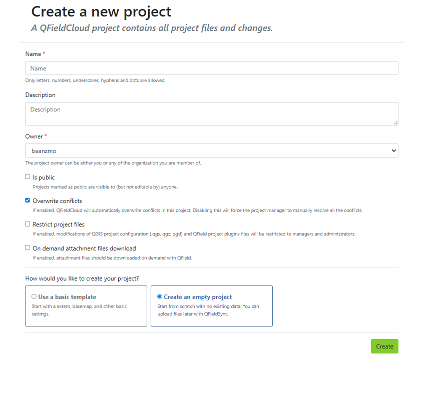
- Add your project name, give a description and select the required settings regarding conflict management and project file restriction.
- Choose your preferred project creation method:
- Create an empty project: This will create a complete empty project without any basemap.
- Use a basic template: This will allow you to select a dedicated basemap provider either OpenStreetMap (by default) or your preffered basemap provider for which you need to provide the URL and define your project extent. You can do this by clicking on the little map icon on the right of the Project extent line.

Once you have entered all your details click Create at the bottom right of the screen
-
You can now see the new project in the overview.
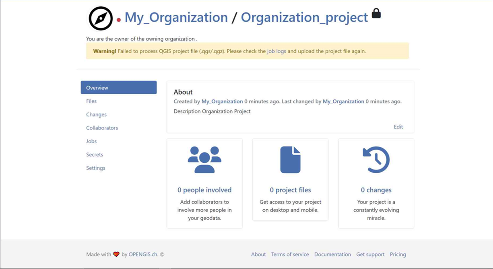
-
In QGIS open QFieldSync and you will see the new project listed, click on "Edit Selected Cloud Project".
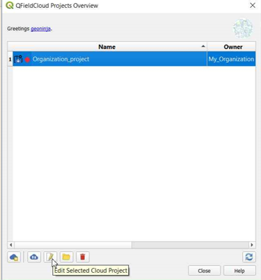
-
Choose the folder where you want to save the project.
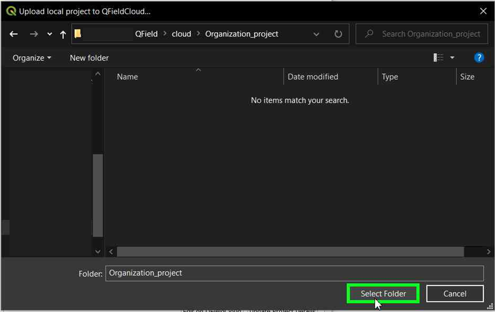
-
In the selected folder, you can either paste an already worked-on project or save a new one.
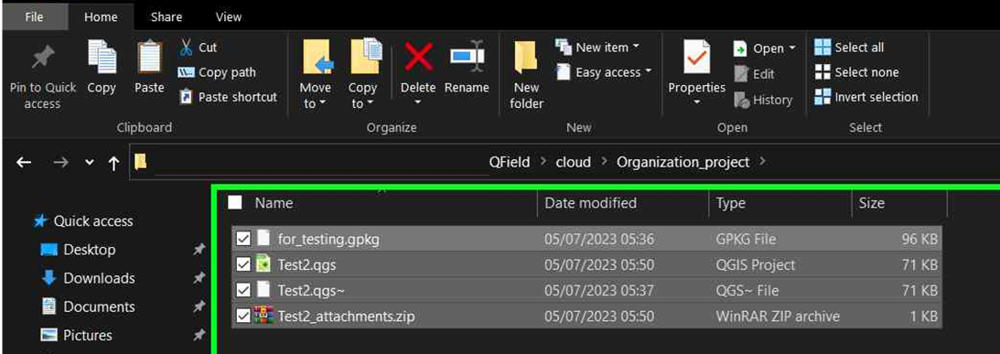
-
Once the folder contains the project, you can synchronize it.
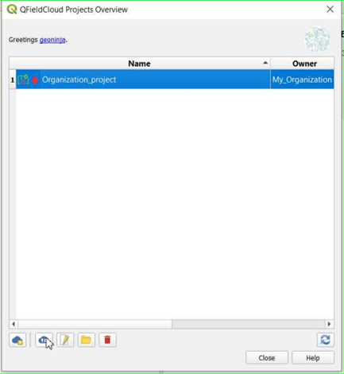
-
Finally, push the changes to the cloud.
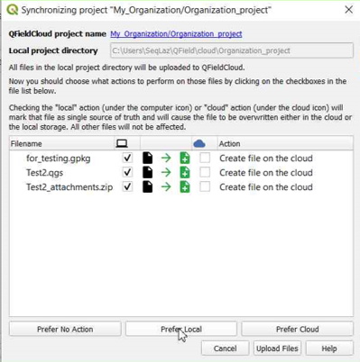
-
You can verify that the files are present in the Organization project.
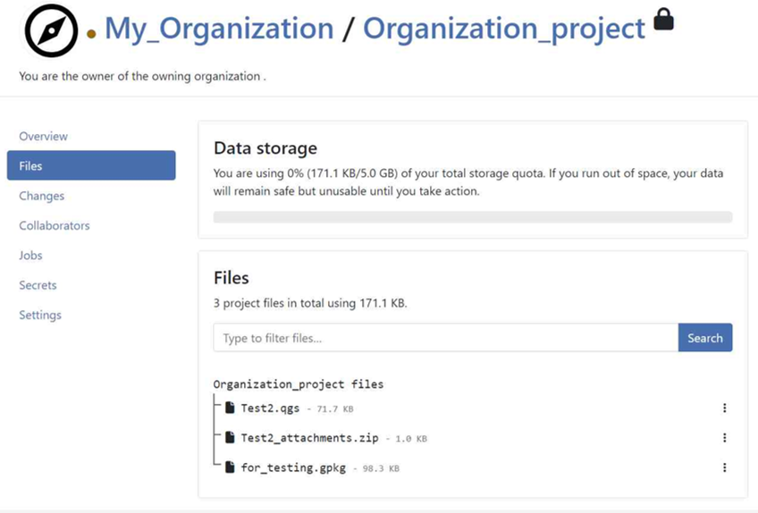
Option 3: Changing the Ownership of a project¶
- On the QFieldCloud landing page, click on your project of concern.
-
Direct to the Settings and select "Transfer ownership of this project" and choose the desired Organization for the transfer.
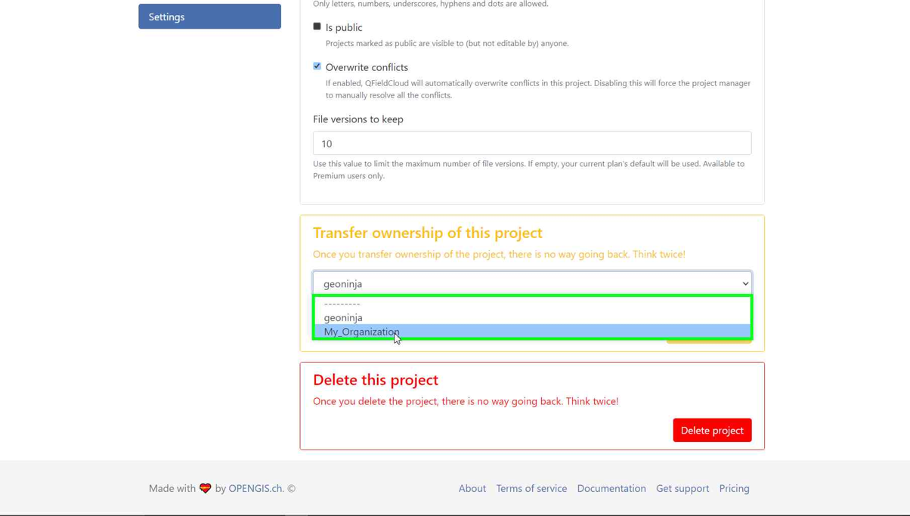
-
A pop-up window will appear to confirm the transfer. To proceed, you will need to type the requested text and click "Transfer project".
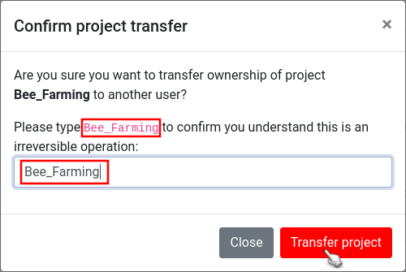
Activar las notificaciones por correo electrónico para los cambios QFieldCloud¶
Si desea que QFieldCloud le notifique lo que sucede con su(s) equipo(s) y sus proyectos, puede activar la opción de notificación por correo electrónico.
- En su página de inicio de QFieldCloud, vaya directamente a configuración.
- Navega a la sección de notificaciones. Aquí puedes personalizar la frecuencia de las notificaciones que deseas recibir en la dirección de correo electrónico registrada en tu cuenta.

Los eventos sobre los que recibirás notificaciones son:
- Usuario creado
- Organización creada
- Organización borrada
- Membresía de organización creada
- Membresía de organización borrada
- Equipo creado
- Equipo borrado
- Membresía de equipo creada
- Membresía de equipo borrada
- Proyecto creado
- Proyecto borrado
- Membresía de proyecto creada
- Membresía de proyecto borrada
Recibirá notificaciones de eventos en los que usted no sea el actor. Estas notificaciones son específicamente para eventos iniciados por otros miembros de tu organización o colaboradores en tus proyectos.
Mejore su proyecto con el "Empaquetador optimizado"¶
We recommend using the new "Optimized Packager" over the deprecated "QGIS Core Offline Editing" for all your projects.
Explanation
Unlike the "QGIS Core Offline Editing" packager the "Optimized Packager" consolidates filtered layers of same datasource into a single offline layer, respecting the distinct symbology but also using less storage. What does this actually mean: If you have multiple filters set in your project layers, QField used to download the whole layer and only then apply the two filteres once downloaded. With the "optimized packager" the filters will be assigned during the packaging job and only then, the filters will be applied.
A continuación se muestra un ejemplo para ilustrar esta característica:
Configuración de ejemplo:
- Capa 1.1:
- Fuente de datos:
layers.gpkg - Tabla:
layer1 -
Filtro:
id % 2 = 1 -
Capa 1.2:
- Fuente de datos:
layers.gpkg - Tabla:
layer1 - Filtro:
id % 2 = 0
Resultado:
Para el nuevo offliner:
- En el GeoPackage offline se genera una única capa, que combina los datos de
layer1con los filtros especificados.
Para el antiguo (QGIS) offliner:
- Se crean dos capas separadas, cada una de las cuales representa los conjuntos de datos filtrados:
- Capa 1: Filtrado con
id % 2 = 1. - Capa 2: Filtrado con
id % 2 = 0.

Nota
Esta configuración debe establecerse en la página Configuración de cada proyecto en QFieldCloud.
Configuración de carpetas de archivos adjuntos¶
Si su proyecto contiene fotos, documentos u otros archivos adjuntos, deberá configurar su proyecto QGIS en consecuencia para garantizar que los datos se descarguen en su dispositivo QField.
- En QGIS, navegue a Proyecto > Propiedades... > QField.
- Agregue la ruta de su carpeta a la lista "Adjuntos y directorios". La ruta que introduzca debe ser relativa a la ubicación del archivo de su proyecto.
Ejemplo
Usaste imágenes para una simbología específica.
Estas se encuentran en una carpeta llamada «assets» dentro de la carpeta principal de tu proyecto.
Agrégalas a la lista, debajo del nombre de la carpeta.

Conectarse a un servidor QFieldCloud personalizado en QField y QFieldSync¶
QField y QFieldSync se conectan al servicio QFieldCloud app.qfield.cloud de forma predeterminada.
Puede modificar la conexión predeterminada a la que se conectan QField y QFieldSync:
- Abra la pantalla de identificación en QField o QFieldSync.
- Toca dos veces el icono de Nyuki (el logotipo de QFieldCloud).
- Esta acción mostrará un campo en el que puede introducir la dirección del servidor preferido de QFieldCloud.
- Introduzca los detalles del servidor deseado en el campo proporcionado. (Si deja el campo vacío, se conectará automáticamente al servidor predeterminado QFieldCloud)


Nota
QField recordará la última URL introducida para futuras sesiones.
Es importante tener en cuenta que QFieldSync no admite el mismo proyecto en la nube en varios perfiles de QGIS.
Como recomendación, utilice un único perfil de QGIS para sus proyectos de QFieldCloud para evitar problemas de sincronización.